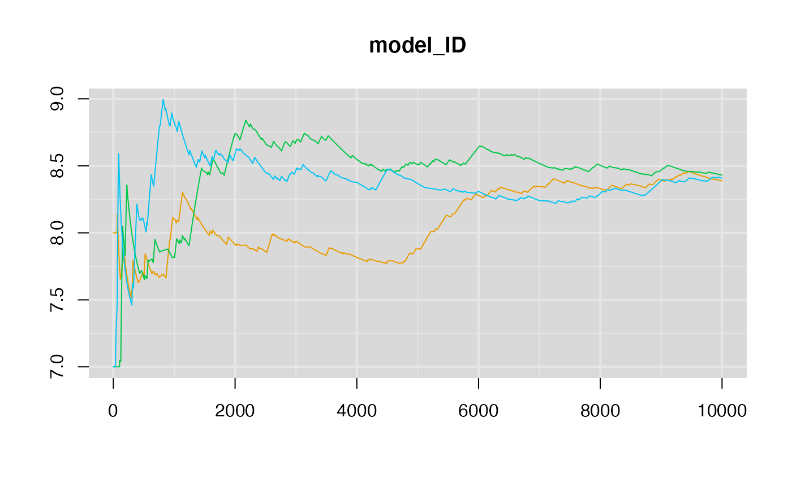
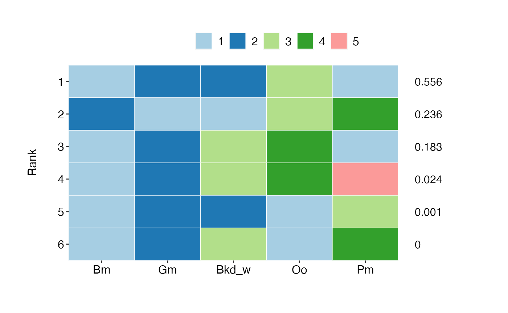
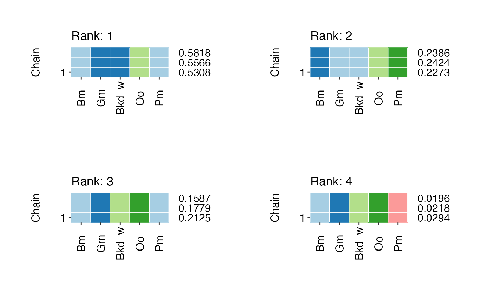
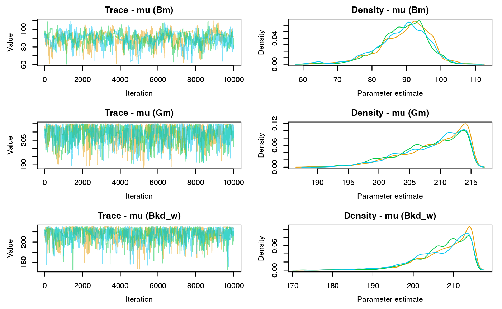
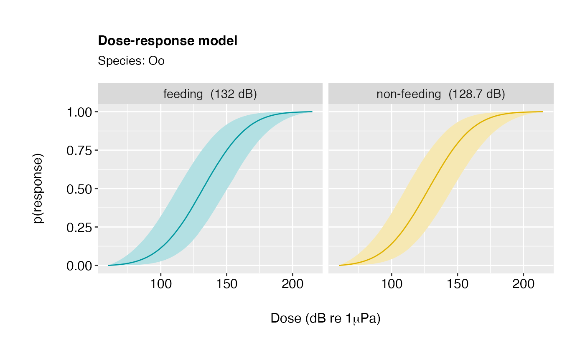
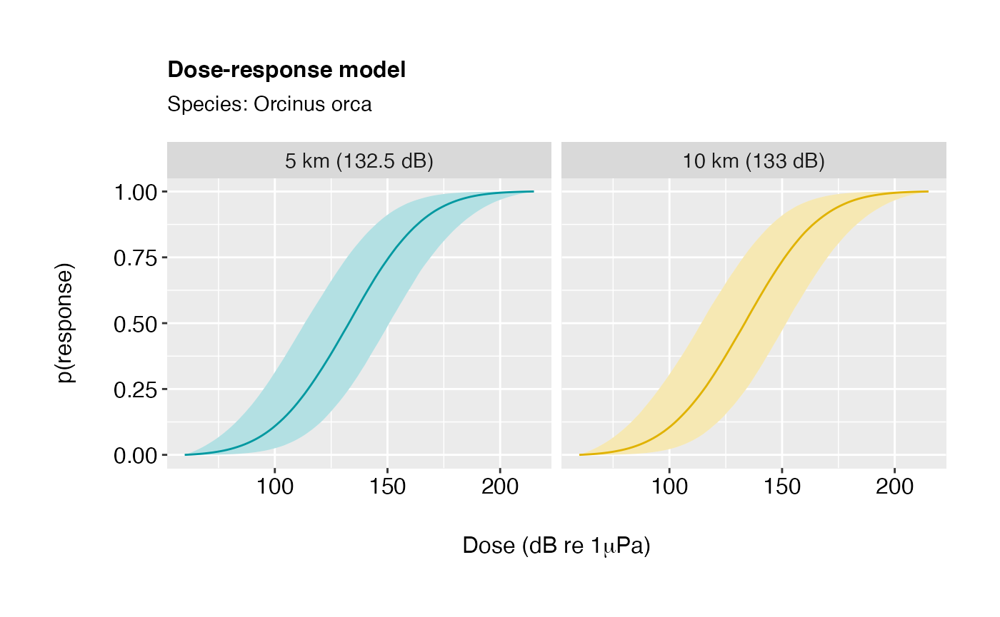
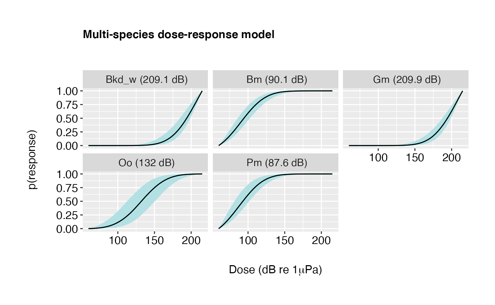
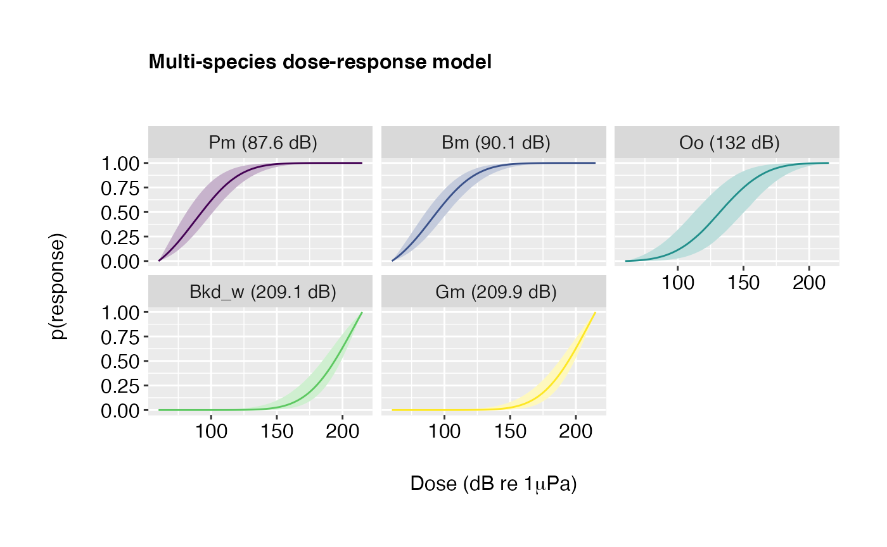

Getting started with espresso
Phil J. Bouchet, Catriona M Harris, Elizabeth E Henderson, Dina Sadykova, Len Thomas
Centre for Research into Ecological & Environmental Modelling, University of St Andrews2021-08-21
espresso.RmdPreamble
This vignette illustrates the use of the espresso R package for fitting and selecting between multi-species behavioural dose-response (“risk”) functions. The package is an extension of the work previously conducted under the U.S. Navy-funded MOCHA project (https://synergy.st-andrews.ac.uk/mocha/) (Harris et al. 2016; Harris et al. 2018), in which Bayesian hierarchical models were developed to estimate the probabilities of noise-related behavioural impacts to marine mammal species, whilst accounting for uncertainty, individual heterogeneity, and the effects of contextual covariates (Miller et al. 2014; Antunes et al. 2014). espresso builds on this framework and provides functions to identify groups of species exhibiting similar patterns of responsiveness to sound, using a Bayesian model selection approach. The underlying method relies on a dimension-jumping reversible-jump Markov chain Monte Carlo algorithm (rjMCMC, Green 1995; Hastie and Green 2012), which accommodates: (1) the selection of explanatory covariates (sonar frequency, previous history of exposure, feeding behaviour, and source-whale range), (2) the comparison of dose-response functional forms[1] (i.e., monophasic or biphasic), and (3) the appropriate treatment of both left-censored and right-censored observations (i.e., animals which display either an immediate response on first exposure, or no signs of response across the array of doses received, respectively).
[1]Soon to be released.
Here, we showcase the main features of espresso using a simulated dataset available from within the package.
Installation
The latest development version of espresso can be installed from GitHub (this requires either the remotes or the devtools package):
# install.packages("remotes")
remotes::install_github("pjbouchet/espresso", dependencies = TRUE)The code below loads the package and sets some general options.
library(espresso)
library(tidyverse)
library(magrittr)
#'--------------------------------------------------------------------
# Set tibble options
#'--------------------------------------------------------------------
options(tibble.width = Inf) # All tibble columns shown
options(pillar.neg = FALSE) # No colouring negative numbers
options(pillar.subtle = TRUE)
options(pillar.sigfig = 4)
Sys.setenv(TZ = "GMT")
#'--------------------------------------------------------------------
# Set knitr options
#'--------------------------------------------------------------------
knitr::opts_chunk$set(echo = TRUE)Overview
This vignette covers all the steps required to set up, fit, assess, and compare Bayesian dose-response models using rjMCMC. This includes:
- Importing data using
read_data. - Grouping some species a priori using
create_groups. - Configuring the rjMCMC sampler using
configure_rjMCMC. - Fitting models using
run_rjMCMC. - Extracting posterior estimates using
trace_rjMCMC. - Generating model diagnostics using
summaryandplotmethods. - Drawing dose-response curves using
compile_rjMCMC.
A flowchart of a typical espresso workflow is shown below.

Figure 1. Schematic representation of a typical espresso workflow. Package functions and object classes are indicated in coloured font.
Data
For demonstration purposes, we rely on the example_brs dataset available from within espresso. This is a mock dataset manufactured based on real-world observations made during behavioural response studies (hereafter, BRS). This dataset should not be used for inference, however it provides a useful template for setting up input data files in a format readable by espresso. It is accompanied by another dataset, species_brs, which provides a list of cetacean species for which BRS data currently exist.
| project | species | tag_id | start_time | resp_time | resp_type | resp_score | resp_spl | resp_se_lcum | max_spl | max_se_lcum | censored | exp_order | exp_duration | exp_signal | pre_feeding | resp_range | min_range | inferred_resp_range | inferred_min_range |
|---|---|---|---|---|---|---|---|---|---|---|---|---|---|---|---|---|---|---|---|
| Example BRS | Gg | gg14_242 | 2017-01-02 06:01:13 | 2017-01-02 06:17:04 | Any | 6 | 116.12972 | 122.6185 | 179.3952 | 202.6716 | 0 | 0 | 23.2 | LFAS_DS | FALSE | 0.8932191 | 0.8932191 | NA | NA |
| Example BRS | Gg | gg14_242 | 2017-01-06 07:46:21 | 2017-01-06 08:27:03 | Avoidance | 6 | 96.67925 | 103.1680 | 179.4548 | 147.7741 | 0 | 1 | 82.3 | LFAS_LO | TRUE | 2.5193679 | NA | NA | NA |
| Example BRS | Gg | gg14_242 | 2017-01-22 22:02:43 | 2017-01-22 22:31:17 | Avoidance | 5 | 113.87348 | 120.3622 | 188.2711 | 145.5376 | 0 | 1 | 85.4 | MFA HELO | FALSE | 4.1213242 | 3.9213242 | NA | NA |
| Example BRS | Ha | ha13_493 | 2017-02-10 03:09:05 | 2017-02-10 03:14:22 | Any | 0 | NA | NA | 184.8979 | 186.2903 | 1 | 0 | 7.6 | SOCAL_d | TRUE | 3.4891743 | 1.1917199 | NA | NA |
| Example BRS | Ha | ha15_533 | 2017-02-28 17:16:00 | 2017-02-28 17:27:30 | Dive | 0 | NA | NA | 182.7808 | 184.1732 | 1 | 0 | 75.4 | MFA | FALSE | 2.6172488 | 2.6172488 | NA | NA |
| Example BRS | Zc | zc6_34 | 2017-04-13 09:19:45 | 2017-04-13 09:49:29 | Dive | 2 | 108.54072 | 179.8435 | 188.9593 | 190.3517 | 1 | 0 | 30.8 | MF ALARM | FALSE | NA | 4.4317774 | NA | NA |
| Code | Scientific name | Common name | NewCode |
|---|---|---|---|
| Bb | Berardius bairdii | Baird’s beaked whale | Bb |
| Bkw | Beaked whale spp. | Beaked whale | Bkw |
| Md | Mesoplodon densirostris | Blainville’s beaked whale | Md |
| Bw | Balaenoptera musculus | Blue whale | Bm |
| Tt | Tursiops truncatus | Bottlenose dolphin | Tt |
| Zca | Zalophus californianus | California sea lion | Zca |
Here, example_brs contains 174 observations of 8 cetacean species (i.e., blue whale, killer whale, Cuvier’s beaked whale, long-finned pilot whale, sperm whale, northern bottlenose whale, Risso’s dolphin, bottlenose dolphin). Of the 20 columns in the data, only five are compulsory:
| Header | Description |
|---|---|
| species | Species code, as listed in species_brs
|
| tag_id | Unique tag ID number |
| resp_spl | Sound pressure level at time of response (in dB re 1μPa) |
| max_spl | Maximum sound pressure level reached during the exposure (in dB re 1μPa) |
| censored | Integer variable indicating whether an observation is left-censored (-1), right-censored (1), or not censored (0) |
When contextual covariates are specified, additional fields must also be included, as relevant:
| Header | Description |
|---|---|
| exp_order | History of exposure (1 = 1st exposure, 2 = 2nd exposure, etc.) |
| exp_signal | Type of sonar signal (e.g., MFAS, REAL MFA, PRN, CAS) |
| pre_feeding | Behavioural mode (TRUE = feeding, FALSE = non-feeding) |
| min_range | Minimum whale-source range during the exposure |
| resp_range | Whale-source range at the time of response |
| inferred_resp_range | Best estimate of whale-source range at the time of response |
| inferred_min_range | Best estimate of minimum whale-source range during the exposure |
Import file
The first step is to read in the BRS data. This is done using the read_data() function, which takes a .csv file as input and returns an object of class <brsdata>.
mydat <- read_data(file = "path/to/my/data.csv")The example_brs dataset can be loaded by setting file to NULL (the default):
mydat <- read_data(file = NULL)read_data() provides several options for filtering data on import, including by species and by minimum sample size. For instance, the code below excludes Risso’s dolphins as well as any other species with less than 3 individuals:
mydat <- read_data(file = NULL, exclude.species = "Risso's dolphin", min.N = 3)Print summary
We can get a detailed summary of the dataset by using the summary() command:
summary(mydat)##
## ======================================================
## DATA SUMMARY
## ======================================================
##
## Simulation: FALSE
## Data file: example_brs
##
## --------------------
## OBSERVATIONS
## --------------------
## Left-censoring: 2
## Right-censoring: 39
## Total: 41
##
## --------------------
## SPECIES
## --------------------
## N = 5
## Excluded (N = 2): Gg Ha
## Species groupings: FALSE
##
## # A tibble: 3 × 3
## trials N_ind `%`
## <chr> <table> <table>
## 1 1 21 0.26
## 2 2 29 0.36
## 3 3 30 0.38
##
## # A tibble: 5 × 8
## species common_name N_ind N_trials censored mean min max
## <chr> <chr> <int> <int> <int> <dbl> <dbl> <dbl>
## 1 Bm Blue whale 32 64 0 95.55 60.72 152.6
## 2 Zc Cuvier's beaked whale 4 10 2 147.9 108.5 185.8
## 3 Oo Killer whale 7 16 0 129.7 92.01 165.9
## 4 Gm Long-finned pilot whale 22 45 9 136.0 66.22 184.9
## 5 Pm Sperm whale 15 34 0 89.53 60.84 163.8
##
## --------------------
## COVARIATES
## --------------------
## No covariatesUpdate: Fri, August 20, 2021
Note: Help files for S3 methods like
summary,plotand?summary.brsdata
Covariates
At present, four contextual covariates can be included in the hierarchical dose-response model:
Previous history of exposure (
exposed);Sonar signal type (
sonar);Behavioural mode, i.e., feeding vs. non-feeding (
behaviour);Source-whale range (
range).
These can be specified in the call to read_data():
mydat <- read_data(file = NULL,
exclude.species = c("Risso's dolphin", "Tursiops truncatus"),
min.N = 2,
covariates = c("behaviour", "range"))Note: Species names can be given using any combination of scientific name, common name, or unique identifier, as listed in
species_brs.
The data summary now includes an overview of available covariates:
summary(mydat)##
## ======================================================
## DATA SUMMARY
## ======================================================
##
## Simulation: FALSE
## Data file: example_brs
##
## --------------------
## OBSERVATIONS
## --------------------
## Left-censoring: 2
## Right-censoring: 41
## Total: 43
##
## --------------------
## SPECIES
## --------------------
## N = 6
## Excluded (N = 2): Gg Tt
## Species groupings: FALSE
##
## # A tibble: 3 × 3
## trials N_ind `%`
## <chr> <table> <table>
## 1 1 23 0.28
## 2 2 29 0.35
## 3 3 30 0.37
##
## # A tibble: 6 × 8
## species common_name N_ind N_trials censored mean min max
## <chr> <chr> <int> <int> <int> <dbl> <dbl> <dbl>
## 1 Bm Blue whale 32 64 0 95.55 60.72 152.6
## 2 Zc Cuvier's beaked whale 4 10 2 147.9 108.5 185.8
## 3 Oo Killer whale 7 16 0 129.7 92.01 165.9
## 4 Gm Long-finned pilot whale 22 45 9 136.0 66.22 184.9
## 5 Ha Northern bottlenose whale 2 2 2 NaN Inf -Inf
## 6 Pm Sperm whale 15 34 0 89.53 60.84 163.8
##
## --------------------
## COVARIATES
## --------------------
## -- behaviour --
## Levels: 2
## [feeding]: n = 57
## [non-feeding]: n = 114
## [NA]: n = 0
##
## -- range --
## [min]: 0.102
## [mean]: 4.66
## [max]: 85.014
## [NA]: n = 0Note: The large number of sonar systems used in BRSs means that some signal types must be discarded and/or lumped together a priori to avoid singularities. By default,
read_datawill:
exclude
PRN,CAS,ALARM,HF ALARM,HFAS,HF ALARM CAS, andMFAS CASgroup
MFAS,MFA,REAL MFA,MFAS_DS,MFA HELO,REAL MFA HELO,SOCAL_d,REAL MFAS,MF ALARMas MFASgroup all other signals as LFAS
This default behaviour can be overridden using the
sonar.groupsandexclude.sonararguments. See theespressopackage documentation for details.
Species groupings
The call to summary above indicated that sample sizes for the two beaked whales species (Zc and Ha) are still limited. As a rule, we do not believe that the model can yield useful inference with less than 5 individuals per species. We could go back and increase the value of the min.N argument in read_data(), but this would result in further data loss. An alternative is to group species a priori using the create_groups() function.
mydat.grp <- create_groups(dat.obj = mydat, abbrev = TRUE,
species.groups = list(Beaked_whales = c("Ha", "Cuvier's beaked whale")))Note that the
abbrevargument can be used to shorten group names, which is useful to avoid clutter in plots and data summaries. Here,abbrevis set toTRUEso the chosen group name,Beaked_whaleswill be abbreviated toBkd_w(see below).
The resulting object now has an additional class of <brsdata.grp> and only four species, including the new group:
class(mydat.grp)## [1] "brsdata.grp" "brsdata" "list"
summary(mydat.grp)##
## ======================================================
## DATA SUMMARY
## ======================================================
##
## Simulation: FALSE
## Data file: example_brs
##
## --------------------
## OBSERVATIONS
## --------------------
## Left-censoring: 2
## Right-censoring: 41
## Total: 43
##
## --------------------
## SPECIES
## --------------------
## N = 5
## Excluded (N = 2): Gg Tt
## Species groupings:
##
## # A tibble: 1 × 3
## name abbrev species
## <chr> <chr> <chr>
## 1 Beaked_whales Bkd_w Ha,Zc
##
## # A tibble: 3 × 3
## trials N_ind `%`
## <chr> <table> <table>
## 1 1 23 0.28
## 2 2 29 0.35
## 3 3 30 0.37
##
## # A tibble: 5 × 7
## species N_ind N_trials censored mean min max
## <chr> <int> <int> <int> <dbl> <dbl> <dbl>
## 1 Bkd_w 6 12 4 147.9 108.5 185.8
## 2 Bm 32 64 0 95.55 60.72 152.6
## 3 Gm 22 45 9 136.0 66.22 184.9
## 4 Oo 7 16 0 129.7 92.01 165.9
## 5 Pm 15 34 0 89.53 60.84 163.8
##
## --------------------
## COVARIATES
## --------------------
## -- behaviour --
## Levels: 2
## [feeding]: n = 57
## [non-feeding]: n = 114
## [NA]: n = 0
##
## -- range --
## [min]: 0.102
## [mean]: 4.66
## [max]: 85.014
## [NA]: n = 0Predefined species groupings can be dissolved using the undo_groups() function, which returns the original dataset.
mydat.ungrp <- undo_groups(mydat.grp)
class(mydat.ungrp)## [1] "brsdata" "list"
summary(mydat.ungrp)##
## ======================================================
## DATA SUMMARY
## ======================================================
##
## Simulation: FALSE
## Data file: example_brs
##
## --------------------
## OBSERVATIONS
## --------------------
## Left-censoring: 2
## Right-censoring: 41
## Total: 43
##
## --------------------
## SPECIES
## --------------------
## N = 6
## Excluded (N = 2): Gg Tt
## Species groupings: FALSE
##
## # A tibble: 3 × 3
## trials N_ind `%`
## <chr> <table> <table>
## 1 1 23 0.28
## 2 2 29 0.35
## 3 3 30 0.37
##
## # A tibble: 6 × 8
## species common_name N_ind N_trials censored mean min max
## <chr> <chr> <int> <int> <int> <dbl> <dbl> <dbl>
## 1 Bm Blue whale 32 64 0 95.55 60.72 152.6
## 2 Zc Cuvier's beaked whale 4 10 2 147.9 108.5 185.8
## 3 Oo Killer whale 7 16 0 129.7 92.01 165.9
## 4 Gm Long-finned pilot whale 22 45 9 136.0 66.22 184.9
## 5 Ha Northern bottlenose whale 2 2 2 NaN Inf -Inf
## 6 Pm Sperm whale 15 34 0 89.53 60.84 163.8
##
## --------------------
## COVARIATES
## --------------------
## -- behaviour --
## Levels: 2
## [feeding]: n = 57
## [non-feeding]: n = 114
## [NA]: n = 0
##
## -- range --
## [min]: 0.102
## [mean]: 4.66
## [max]: 85.014
## [NA]: n = 0rjMCMC
Overview
The (monophasic) Bayesian hierarchical dose-response model is fully described in Miller et al. (2014) and Antunes et al. (2014), and is illustrated in Figure 2.

Figure 2. Directed acyclic graph of the monophasic dose-response function. Model variablesare denoted by circles and constants (i.e., known quantities) by squares. Shading denotes quantities for which prior distributions are required. Lines join quantities that are directly related to one another, with arrows showing the direction of inference.
To discriminate between competing models, we treat the model itself as a parameter and form the joint posterior distribution over both parameters and models (Oedekoven et al. 2014). Every iteration of the rjMCMC algorithm therefore entails two sequential steps:
A between-model move, whereby we update the model using the rjMCMC algorithm.
A within-model move, whereby we update parameters given the current model using a Metropolis-Hastings algorithm.
In espresso, the main mechanism for exploring the model space is by merging or splitting groups of species (i.e., a split-merge approach) (Huelsenbeck et al. 2004). A split move works by randomly picking a group (of at least two species) and creating two new groups from it (single split). For example, if the current model is (Oo,Pm)+(Bm)+(Bkd_w), then the only possible split is to separate killer whales (Oo) and sperm whales (Pm) and assign them to their own groups. Similarly, a merge move works by randomly selecting two groups (of any size) and collapsing them into one.
The probability of a split move, \(P_S\), is given by the product of: (1) the probability of proposing to perform a split \(P_S(prop)\), (2) the probability of choosing a group to split among all available groups, \(P_S(choose)\), and (3) the probability of performing a particular split, \(P_S(split)\), when multiple single splits are possible within the chosen group. Likewise, the probability of a merge move, \(P_M\), is given by the product of: (1) the probability of proposing to perform a merge \(P_M(prop)\), and (2) the probability of choosing two groups to combine, \(P_M(choose)\), out of all possible pairs of existing groups.
Note: When the current model is the one where all species are in a single group, then \(P_M(prop)\) is
0and \(P_S(prop)\) equals1. Conversely, when all species are assigned to their own groups in the current model, then \(P_M(prop)\) is1and \(P_S(prop)\) equals0.
By default, both \(P_M(prop)\) and \(P_S(prop)\) are set to 0.5, however these values can be adjusted by the user (see help files for details).
To facilitate convergence and avoid getting stuck in local maxima, espresso also implements three additional types of between-model moves:
data-driven (Type I and Type II) moves, in which proposals are informed by the “cues” present in the original data. These moves are defined based on the results of a cluster analysis performed on both (1) species means and (2) raw observations, using a non-parametric bootstrap approach (Hofmans et al. 2015). Specifically, the clustering algorithm, implemented in the
mclustpackage (Scrucca et al. 2016), provides estimates of the probability distributions of unique groupings (Type I), and numbers of groups (regardless of species identity, Type II), where the latter ranges fromn = 1when all species belong to the same group, ton = n.specieswhen each species is treated individually. Type I moves work by proposing a candidate model with a known non-zero probability, which is given by the proportion of Bootstrap replicates in which each model optimised the BIC during clustering (seemclustfor details). In contrast, Type II moves are conducted by first proposing a number of groupings (again, with probability given via bootstrap clustering), and subsequently proposing an appropriate candidate model with the corresponding grouping structure.random moves, in which proposed values are drawn from a
Uniformdistribution bounded byrange.dB(seeread_data()orsimulate_data()), with no dependence on current values (i.e., an independent sampler).
By default, data-driven and random moves are only proposed every 100th iteration, at a relative frequency of 3 (Type I) / 1 (Type II) / 1 (random), such that attempts to perform a Type I move are made at iterations 100, 200, and 300, followed by a Type II move at iteration 400, and a random move at iteration 500. Again, these default values can be modified by the user where needed.
A similar strategy is in place when covariate selection is enabled. In this case, the reversible jump step also entails a proposal to either drop a covariate that is already included in the model, or add one that is not. This requires generating a value for the new covariate parameter from a predefined proposal distribution (if we propose to add a covariate) or setting it to zero (if we propose to delete it), and calculating the acceptance probability accordingly (Oedekoven et al. 2014).
Default values for many of those choices are already given in espresso, but can be modified by the user if necessary, as explained in the section below.
Configuration
Before running any models, we need to first set up the reversible jump sampler. The configure_rjMCMC() function allows us to do so, by specifying whether to enable either/both model (model.select) and covariate (covariate.select) selection:
mydat.config <- configure_rjMCMC(dat = mydat.grp,
model.select = TRUE,
covariate.select = TRUE,
n.rep = 100)## Generating Bootstrap resamples ...
## Performing cluster analysis ...
## Done!Note: When
model.select = FALSE, the MCMC sampler will be constrained to the species groupings defined in thebrsdataorbrsdata.grpobject, and will only estimate the parameters of the corresponding model, without allowing model selection. Likewise,covariate.select = FALSEwill force the inclusion of all covariates defined usingread_data()orsimulate_data().
Update: Fri, August 20, 2021
Other (optional) arguments can be passed to configure_rjMCMC, for instance to change move types, default values for proposal standard deviations in the MCMC sampler etc. Please consult the help documentation for details.
configure_rjMCMC() performs three actions:
It returns empirical estimates of the between-whale (φ) and within-whale between-exposure (σ) variation, which are needed to generate plausible starting values for the MCMC chains.
It defines the means and standard deviations of relevant (1) proposal distributions and (2) priors. Default values for the widths of proposal distributions were chosen through careful pilot tuning of individual parameters, but can be adjusted using the
proposal.mhandproposal.rjarguments, if necessary (see help files). The Bayesian hierarchical dose-response model assumes Uniform priors for μ, σ and φ (Figure 2), and Normal priors centred on0and with a standard deviation of30for all contextual covariates, β. These values can be modified using theprior.covariatesargument.It conducts a model-based cluster analysis to parameterise between-model jumps using
n.repbootstrap replicates of the input data.
The output object is one of class <rjconfig>. It is identical to the input brsdata or brsdata.grp object but contains additional information needed for sampler execution, which is captured in the ‘MCMC’ section of the data summary.
class(mydat.config)## [1] "rjconfig" "brsdata.grp" "brsdata" "list"
summary(mydat.config, print.config = TRUE)##
## ======================================================
## DATA SUMMARY
## ======================================================
##
## Simulation: FALSE
## Data file: example_brs
##
## --------------------
## OBSERVATIONS
## --------------------
## Left-censoring: 2
## Right-censoring: 41
## Total: 43
##
## --------------------
## SPECIES
## --------------------
## N = 5
## Excluded (N = 2): Gg Tt
## Species groupings:
##
## # A tibble: 1 × 3
## name abbrev species
## <chr> <chr> <chr>
## 1 Beaked_whales Bkd_w Ha,Zc
##
## # A tibble: 3 × 3
## trials N_ind `%`
## <chr> <table> <table>
## 1 1 23 0.28
## 2 2 29 0.35
## 3 3 30 0.37
##
## # A tibble: 5 × 7
## species N_ind N_trials censored mean min max
## <chr> <int> <int> <int> <dbl> <dbl> <dbl>
## 1 Bkd_w 6 12 4 147.9 108.5 185.8
## 2 Bm 32 64 0 95.55 60.72 152.6
## 3 Gm 22 45 9 136.0 66.22 184.9
## 4 Oo 7 16 0 129.7 92.01 165.9
## 5 Pm 15 34 0 89.53 60.84 163.8
##
## --------------------
## COVARIATES
## --------------------
## -- behaviour --
## Levels: 2
## [feeding]: n = 57
## [non-feeding]: n = 114
## [NA]: n = 0
##
## -- range --
## [min]: 0.102
## [mean]: 4.66
## [max]: 85.014
## [NA]: n = 0
##
##
##
## --------------------
## MCMC
## --------------------
##
## Model selection: TRUE
## Covariate selection: TRUE
##
## Variance estimates: 14.4 (sigma); 29.4 (phi)
##
## Proposal standard deviations:
##
## # A tibble: 8 × 3
## param SD step
## <chr> <dbl> <chr>
## 1 t.ij 10 MH
## 2 mu.i 10 MH
## 3 mu 7 MH
## 4 phi 10 MH
## 5 sigma 10 MH
## 6 behaviour 10 MH
## 7 range 3 MH
## 8 data-driven 1 RJ
##
## Priors:
##
## μ: Uniform (60; 215)
## φ: Uniform (0; 45)
## σ: Uniform (0; 45)
##
## p(split): 0.5
## p(merge): 0.5
##
##
## Clustering:
##
## [[1]]
## # A tibble: 2 × 3
## model p p_scale
## <chr> <dbl> <dbl>
## 1 (Gm,Bkd_w)+(Bm)+(Oo)+(Pm) 0.53 0.53
## 2 (Bm,Pm)+(Gm,Bkd_w)+(Oo) 0.47 0.47
##
## [[2]]
## # A tibble: 5 × 3
## cluster p p_scale
## <dbl> <dbl> <dbl>
## 1 1 0 0.05660
## 2 2 0.16 0.1509
## 3 3 0.32 0.3019
## 4 4 0.46 0.4340
## 5 5 0.06 0.05660Model fitting
Now that initial setup is complete, we can proceed with model fitting. This step is designed to mirror a typical Bayesian modelling workflow in the rjags package (Plummer 2019). The following call to run_rjMCMC() compiles the information given in mydat.config, creates the R data structures required to hold the MCMC samples, and runs the models:
rj <- run_rjMCMC(dat = mydat.config, n.chains = 3, n.burn = 25000, n.iter = 100000)For illustration purposes (and speed!), we use three MCMC chains of 10,000 samples each, and a 1,000 step burn-in. These values are dependent on the context of each analysis, but should generally be much higher than this – typically, the higher the number of species (and thus the number of candidate models, when model.selection = TRUE), the longer the chains will need to be to achieve convergence.
With five species in the dataset (namely, Bm, Oo, Pm, Gm, Bkd_w), the sampler will jump between 52 possible candidate models. Out of interest, these can be listed using the listParts function from the partitions package (Hankin 2006).
multicool::Bell(n = 5) # Number of candidate models## [1] 52
# List of candidate models
partitions::listParts(x = 5) %>%
purrr::map_depth(.x = ., .depth = 2, .f = ~mydat.config$species$names[.x]) %>%
purrr::map(.x = .,
.f = ~ lapply(X = .x, FUN = function(x) paste(x, collapse = ","))) %>%
purrr::map(.x = ., .f = ~ paste0("(", .x, ")")) %>%
purrr::map(.x = ., .f = ~paste0(.x, collapse = "+")) %>%
tibble::enframe() %>% dplyr::select(-name) %>%
dplyr::rename(model = value) %>% data.frame()## model
## 1 (Bm,Gm,Bkd_w,Oo,Pm)
## 2 (Bm,Gm,Oo,Pm)+(Bkd_w)
## 3 (Bm,Gm,Bkd_w,Pm)+(Oo)
## 4 (Bm,Gm,Bkd_w,Oo)+(Pm)
## 5 (Bm,Bkd_w,Oo,Pm)+(Gm)
## 6 (Gm,Bkd_w,Oo,Pm)+(Bm)
## 7 (Bm,Gm,Pm)+(Bkd_w,Oo)
## 8 (Bm,Gm,Oo)+(Bkd_w,Pm)
## 9 (Bm,Gm,Bkd_w)+(Oo,Pm)
## 10 (Bm,Bkd_w,Pm)+(Gm,Oo)
## 11 (Bm,Bkd_w,Oo)+(Gm,Pm)
## 12 (Bm,Oo,Pm)+(Gm,Bkd_w)
## 13 (Gm,Bkd_w,Pm)+(Bm,Oo)
## 14 (Gm,Bkd_w,Oo)+(Bm,Pm)
## 15 (Gm,Oo,Pm)+(Bm,Bkd_w)
## 16 (Bkd_w,Oo,Pm)+(Bm,Gm)
## 17 (Bm,Gm,Pm)+(Bkd_w)+(Oo)
## 18 (Bm,Gm,Oo)+(Bkd_w)+(Pm)
## 19 (Bm,Gm,Bkd_w)+(Oo)+(Pm)
## 20 (Bm,Bkd_w,Pm)+(Gm)+(Oo)
## 21 (Bm,Bkd_w,Oo)+(Gm)+(Pm)
## 22 (Bm,Oo,Pm)+(Gm)+(Bkd_w)
## 23 (Gm,Bkd_w,Pm)+(Bm)+(Oo)
## 24 (Gm,Bkd_w,Oo)+(Bm)+(Pm)
## 25 (Gm,Oo,Pm)+(Bm)+(Bkd_w)
## 26 (Bkd_w,Oo,Pm)+(Bm)+(Gm)
## 27 (Bm,Pm)+(Gm,Oo)+(Bkd_w)
## 28 (Bm,Pm)+(Gm,Bkd_w)+(Oo)
## 29 (Bm,Pm)+(Bkd_w,Oo)+(Gm)
## 30 (Bm,Gm)+(Oo,Pm)+(Bkd_w)
## 31 (Bm,Gm)+(Bkd_w,Pm)+(Oo)
## 32 (Bm,Gm)+(Bkd_w,Oo)+(Pm)
## 33 (Bm,Bkd_w)+(Gm,Pm)+(Oo)
## 34 (Bm,Bkd_w)+(Gm,Oo)+(Pm)
## 35 (Bm,Bkd_w)+(Oo,Pm)+(Gm)
## 36 (Bm,Oo)+(Gm,Pm)+(Bkd_w)
## 37 (Bm,Oo)+(Gm,Bkd_w)+(Pm)
## 38 (Bm,Oo)+(Bkd_w,Pm)+(Gm)
## 39 (Gm,Pm)+(Bkd_w,Oo)+(Bm)
## 40 (Gm,Bkd_w)+(Oo,Pm)+(Bm)
## 41 (Gm,Oo)+(Bkd_w,Pm)+(Bm)
## 42 (Bm,Pm)+(Gm)+(Bkd_w)+(Oo)
## 43 (Bm,Gm)+(Bkd_w)+(Oo)+(Pm)
## 44 (Bm,Bkd_w)+(Gm)+(Oo)+(Pm)
## 45 (Bm,Oo)+(Gm)+(Bkd_w)+(Pm)
## 46 (Gm,Pm)+(Bm)+(Bkd_w)+(Oo)
## 47 (Gm,Bkd_w)+(Bm)+(Oo)+(Pm)
## 48 (Gm,Oo)+(Bm)+(Bkd_w)+(Pm)
## 49 (Bkd_w,Pm)+(Bm)+(Gm)+(Oo)
## 50 (Bkd_w,Oo)+(Bm)+(Gm)+(Pm)
## 51 (Oo,Pm)+(Bm)+(Gm)+(Bkd_w)
## 52 (Bm)+(Gm)+(Bkd_w)+(Oo)+(Pm)Note:
listPartsis only shown for illustrative purposes and will grind down when the number of species increases, possibly causing memory issues. Its use is not recommended when n > 10.
Model assessment
We need to make sure that the MCMC sampler produces a Markov chain that “converges” to the appropriate density (the posterior density) and that explores the parameter space (“mixes”) efficiently, i.e., that doesn’t reject or accept too many proposals. If too many proposals are rejected, we need many simulations to generate a sufficient number of parameter samples. If too many proposals are accepted, we don’t gain much information about the underlying distribution.
Update: Fri, 20 August, 2021
We start by extracting posterior samples from the rjmcmc object returned by run_rjMCMC(). This gives an object of class <rjtrace>.
rj.posterior <- trace_rjMCMC(rj, thin = 10)
class(rj.posterior)## [1] "rjtrace" "list"Update: Fri, 20 August, 2021
Note: The
thinargument is used to discard every kth value, wherethin = k. This is mainly done to reduce autocorrelation in the MCMC chains and obtain a more representative sample of independent draws from the posterior. There is still some debate around the merits of thinning chains in MCMC. However, it can be useful to deal with memory or time constraints in post-chain processing, i.e., for obtaining R objects of more manageable size after (very) long runs of the algorithm. The example above (thin = 10) is purely arbitrary. An appropriate value needs to be determined by inspection of the chain autocorrelation plots (see below), among other things.
Update: Fri, 20 August, 2021
In rjMCMC, there is little point in checking individual model parameters if the algorithm hasn’t converged to a stationary distribution for the between-model jumps. The recommended approach to model assessment therefore involves two stages:
First, assess the convergence of the rjMCMC sampler (between-model jumps). This is done by looking at (i) running means plots of the
model_IDparameter (which should show chains plateau-ing around the same model (or set of models), (ii) tile plots of species groupings for top-ranked models (which should show similar grouping patterns and similar posterior probabilities across chains), and (iii) to some extent, density plots of model size.Second, assess the convergence of the Metropolis-Hastings sampler (within-model jumps). Here, convergence and mixing are commonly ascertained both (1) graphically, by inspecting e.g., trace plots of individual parameters and checking that chains are clearly stable and well-mixed, and that posterior density distributions are smooth, and (2) numerically, using diagnostics such as those available in package
coda(Plummer et al. 2006).
The summary and plot methods provide all the information needed to perform the checks described above. Specifically, a run of summary returns:
An overview of model run parameters (e.g., number of chains, chain lengths, burn-in, priors, move probabilities, etc.)
Acceptance rates and effective sample sizes for each parameter
A numerical assessment of model convergence using the Gelman-Rubin statistic (also known as the potential scale reduction factor). Scores in the 1.00–1.1 range are generally considered to indicate good convergence.
espressogives a breakdown of the estimated scores for each parameter, as well as an overall (multivariate) score that summarises convergence across all parameters.A table of posterior inclusion probabilities (PIPs) for contextual covariates, when covariate selection is enabled (for both individual chains, and all chains combined). Convergence is achieved when posterior probabilities from different chains are similar (within the range of Monte Carlo error).
A table of posterior model probabilities and rankings, when model selection is enabled for both individual chains, and all chains combined). Convergence is achieved when posterior probabilities from different chains are similar (within the range of Monte Carlo error).
Tile plots of species groupings for top ranking models for both individual chains, and all chains combined).
A running means plot of the model_ID chains.
summary(rj.posterior)##
## ======================================================
## SUMMARY
## ======================================================
##
## Iterations: 1001:11000
## Thinning interval: 1
## Burn-in: 1,000
## Number of chains: 3
## Sample size per chain: 10,000
## Total sample size: 30,000
##
## Run times:
## # A tibble: 3 × 2
## Chain Time
## <chr> <time>
## 1 Chain 1 28'11"
## 2 Chain 2 27'25"
## 3 Chain 3 27'19"
##
## --------------------
## MCMC
## --------------------
## Priors:
##
## μ: Uniform [60-215]
## φ: Uniform [0-45]
## σ: Uniform [0-45]
## behaviour: Normal (0, 30)
## range: Normal (0, 30)
##
## p(split): 0.5
## p(merge): 0.5
##
## # A tibble: 4 × 2
## move n
## <chr> <table>
## 1 split-merge 9900
## 2 data-driven (Type I) 60
## 3 data-driven (Type II) 20
## 4 random 20
##
## --------------------
## EFFECTIVE SAMPLE SIZES
## --------------------
## # A tibble: 13 × 2
## parameter ESS
## <chr> <dbl>
## 1 mu.Bm 242.8
## 2 mu.Gm 373.8
## 3 mu.Bkd_w 443.2
## 4 mu.Oo 240.0
## 5 mu.Pm 176.9
## 6 phi 164.5
## 7 sigma 484.8
## 8 behaviour_non-feeding 160.3
## 9 range 162.5
## 10 model_ID 449.7
## 11 model_size 488.9
## 12 incl.behaviour 546.8
## 13 incl.range 3326.
##
## --------------------
## ACCEPTANCE RATES
## --------------------
## # A tibble: 3 × 13
## chain t.ij mu.i mu phi sigma behaviour range split.merge datadriven.I
## <int> <dbl> <dbl> <dbl> <dbl> <dbl> <dbl> <dbl> <dbl> <dbl>
## 1 1 0.3253 0.7210 0.148 0.187 0.177 0.188 0.003 0.033 0
## 2 2 0.3238 0.7390 0.149 0.196 0.181 0.185 0.003 0.034 0
## 3 3 0.3258 0.7316 0.153 0.189 0.174 0.189 0.005 0.035 0
## datadriven.II random cov.select
## <dbl> <dbl> <dbl>
## 1 0 0 0.18
## 2 0 0 0.2
## 3 0 0 0.188
##
## --------------------
## CONVERGENCE ASSESSMENT
## --------------------
## Convergence: TRUE
## Potential scale reduction factors:
##
## Point est. Upper C.I.
## mu.Bm 1.01 1.01
## mu.Gm 1.00 1.01
## mu.Bkd_w 1.00 1.01
## mu.Oo 1.00 1.01
## mu.Pm 1.00 1.01
## phi 1.00 1.01
## sigma 1.00 1.00
## behaviour_non-feeding 1.01 1.02
## range 1.01 1.03
## model_ID 1.00 1.00
## model_size 1.00 1.01
## incl.behaviour 1.00 1.00
## incl.range 1.00 1.01
##
## Multivariate psrf
##
## 1.01
##
## --------------------
## COVARIATES
## --------------------
##
## --- All chains (n = 3) ---
## # A tibble: 5 × 5
## covariate p monte_carlo lower upper
## <chr> <dbl> <dbl> <dbl> <dbl>
## 1 behaviour (overall) 0.6508 0.02039 0.6104 0.6911
## 2 range (overall) 0.04267 0.003504 0.0357 0.0496
## 3 behaviour (only) 0.6344 0.01956 0.5956 0.6731
## 4 range (only) 0.02627 0.002913 0.0205 0.032
## 5 behaviour + range 0.0164 0.001329 0.0138 0.019
##
## --- Individual chains ---
## Chain 1 :
## # A tibble: 5 × 5
## covariate p monte_carlo lower upper
## <chr> <dbl> <dbl> <dbl> <dbl>
## 1 behaviour (overall) 0.6585 0.03418 0.5908 0.7262
## 2 range (overall) 0.0357 0.004681 0.0264 0.045
## 3 behaviour (only) 0.6425 0.03052 0.5821 0.7029
## 4 range (only) 0.0197 0.002980 0.0138 0.0256
## 5 behaviour + range 0.016 0.002581 0.0109 0.0211
##
## Chain 2 :
## # A tibble: 5 × 5
## covariate p monte_carlo lower upper
## <chr> <dbl> <dbl> <dbl> <dbl>
## 1 behaviour (overall) 0.6471 0.02423 0.5991 0.6951
## 2 range (overall) 0.0492 0.007267 0.0348 0.0636
## 3 behaviour (only) 0.6284 0.02489 0.5791 0.6777
## 4 range (only) 0.0305 0.006008 0.0186 0.0424
## 5 behaviour + range 0.0187 0.002469 0.0138 0.0236
##
## Chain 3 :
## # A tibble: 5 × 5
## covariate p monte_carlo lower upper
## <chr> <dbl> <dbl> <dbl> <dbl>
## 1 behaviour (overall) 0.6467 0.03325 0.5809 0.7125
## 2 range (overall) 0.0431 0.006319 0.0306 0.0556
## 3 behaviour (only) 0.6322 0.03295 0.567 0.6974
## 4 range (only) 0.0286 0.005110 0.0185 0.0387
## 5 behaviour + range 0.0145 0.001957 0.0106 0.0184
##
##
## --------------------
## MODEL RANKINGS
## --------------------
##
## --- All chains (n = 3) ---
##
## Top 10 models:
## # A tibble: 6 × 6
## ID p model monte_carlo lower upper
## <dbl> <dbl> <chr> <dbl> <dbl> <dbl>
## 1 7 0.5564 (Bm,Pm)+(Gm,Bkd_w)+(Oo) 0.02170 0.5134 0.5994
## 2 12 0.2361 (Gm,Bkd_w)+(Bm)+(Oo)+(Pm) 0.02222 0.1921 0.2801
## 3 8 0.1830 (Bm,Pm)+(Gm)+(Bkd_w)+(Oo) 0.01778 0.1478 0.2182
## 4 9 0.0236 (Bm)+(Gm)+(Bkd_w)+(Oo)+(Pm) 0.003664 0.0163 0.0309
## 5 5 0.0006333 (Bm,Oo)+(Gm,Bkd_w)+(Pm) 0.0005424 0 0.0017
## 6 6 0.0002333 (Bm,Oo)+(Gm)+(Bkd_w)+(Pm) 0.0002026 0 0.0006
##
## --- Individual chains ---
##
## Top 6 models (chain 1):
## # A tibble: 6 × 6
## ID p model monte_carlo lower upper
## <dbl> <dbl> <chr> <dbl> <dbl> <dbl>
## 1 7 0.5818 (Bm,Pm)+(Gm,Bkd_w)+(Oo) 0.03718 0.5082 0.6554
## 2 12 0.2386 (Gm,Bkd_w)+(Bm)+(Oo)+(Pm) 0.03800 0.1634 0.3138
## 3 8 0.1587 (Bm,Pm)+(Gm)+(Bkd_w)+(Oo) 0.02164 0.1159 0.2015
## 4 9 0.0196 (Bm)+(Gm)+(Bkd_w)+(Oo)+(Pm) 0.007885 0.004 0.0352
## 5 6 0.0007 (Bm,Oo)+(Gm)+(Bkd_w)+(Pm) 0.0007415 0 0.0022
## 6 5 0.0006 (Bm,Oo)+(Gm,Bkd_w)+(Pm) 0.0005999 0 0.0018
##
##
## Top 5 models (chain 2):
## # A tibble: 5 × 6
## ID p model monte_carlo lower upper
## <dbl> <dbl> <chr> <dbl> <dbl> <dbl>
## 1 7 0.5566 (Bm,Pm)+(Gm,Bkd_w)+(Oo) 0.03715 0.483 0.6302
## 2 12 0.2424 (Gm,Bkd_w)+(Bm)+(Oo)+(Pm) 0.03073 0.1816 0.3032
## 3 8 0.1779 (Bm,Pm)+(Gm)+(Bkd_w)+(Oo) 0.02601 0.1264 0.2294
## 4 9 0.0218 (Bm)+(Gm)+(Bkd_w)+(Oo)+(Pm) 0.005559 0.0108 0.0328
## 5 5 0.0013 (Bm,Oo)+(Gm,Bkd_w)+(Pm) 0.001346 0 0.004
##
##
## Top 4 models (chain 3):
## # A tibble: 4 × 6
## ID p model monte_carlo lower upper
## <dbl> <dbl> <chr> <dbl> <dbl> <dbl>
## 1 7 0.5308 (Bm,Pm)+(Gm,Bkd_w)+(Oo) 0.03663 0.4583 0.6033
## 2 12 0.2273 (Gm,Bkd_w)+(Bm)+(Oo)+(Pm) 0.03594 0.1561 0.2985
## 3 8 0.2125 (Bm,Pm)+(Gm)+(Bkd_w)+(Oo) 0.03369 0.1458 0.2792
## 4 9 0.0294 (Bm)+(Gm)+(Bkd_w)+(Oo)+(Pm) 0.008087 0.0134 0.0454
Note: A more compact version of the output summary can be obtained by hiding sections that are not of interest. This is done by setting the relevant argument to
FALSE(see help files for details). For example,accept.rate = FALSEwill hide summary of acceptance rates.
Update: Fri, 20 August, 2021
Note:
n.topsets the number of top-ranking models to display in the output. Values substantially greater than 10 (the default) may result in memory errors or long run times.
Note: The
combine.chainsargument is now deprecated. Instead, thesummarymethod presents all outputs for individual chains and all chains combined in the same run.
Trace and density plots can be obtained using the plot method. Convergence is evidenced by chains that level off to a stable, stationary state. Good mixing is apparent in plots that show random scatter around a mean value, somewhat resembling a hairy caterpillar. Running mean plots are also useful in identifying whether the means of the different chains converge to a similar value.
{kind=link}
plot(rj.posterior, individual = TRUE)
Note: Plots for specific parameters of interest can be generated using the
param.nameargument. Ifindividual = TRUEseparate density lines will be plotted for each chain.
Another way to check for convergence is to look at the serial autocorrelation between MCMC samples. The lag-\(k\) autocorrelation is the correlation between every sample and the sample \(k\) steps before it. This autocorrelation should become smaller as \(k\) increases, i.e., samples can be considered as independent. If, on the other hand, autocorrelation remains high for higher values of \(k\), this indicates a high degree of correlation between our samples and slow mixing.
Note: Autocorrelation plots can be obtained with
autocorr = TRUE(this is now the default)
# Plot for the range covariate only
plot(rj.posterior, param.name = "range", autocorr = FALSE)Model updates
Updates to the Markov chain may be required if the model has failed to converge. The update_rjMCMC() function can be used to extend a previous model run; it “picks up where the sampler left off” by extracting the last MCMC samples for each parameter and using those as new starting values. The same model checking procedures apply to this new run, and the update process can be repeated until convergence is achieved.
Dose-response
By species
The compile_rjMCMC() function computes posterior dose-response curves for each species (or a priori species grouping) from the parameter estimates of a fitted rjMCMC model. The output is an object of class <dose_response>, which can be passed to plot directly:
doseR <- compile_rjMCMC(rj.posterior)
class(doseR)## [1] "dose_response" "list"
plot(doseR)Note: By default,
compile_rjMCMC()calculates a range of posterior credible intervals, from 5% to 95%, in 5% increments. These default values can be overridden using thecredible.intervalsargument.
Curves for covariates of interest can also be obtained by conditioning on a given species/species group. For example:
doseR.beh <- compile_rjMCMC(rj.posterior, covariate = "behaviour", species = "Oo")
plot(doseR.beh)
For continuous covariates, such as whale-source range, curves can be generated for any
doseR.rge <- compile_rjMCMC(rj.posterior,
covariate = "range",
covariate.values = c(5, 10),
species = "Oo")
plot(doseR.rge, scientific.name = TRUE)
Numerous additional options are available to refine plot aesthetics, including shading/colours, plot ordering, faceting layouts, and species labels. Some example visualisations are given below.
Example 1: Black and white colour scheme.
plot(doseR, colour = "gray20", colour.median = "black")
Example 2: Curves coloured by species/species groups and ordered from most to least sensitive.
plot(doseR, colour.by = "species", order.by = "response")
Example 3: Scientific names in plot labels, posterior medians hidden, outer credible intervals outlined.
plot(doseR, scientific.name = TRUE, show.p0_5 = FALSE, outline.outer = TRUE)Example 4: Plot overlay.
plot(doseR, colour.by = "species", overlay = TRUE)By model
Update: Fri, 20 August, 2021
When model.select = TRUE, dose-response curves are derived irrespective of model IDs (by default), and therefore reflect model uncertainty (see above). If dose-response functions are needed for a specific model of interest (e.g., the top-ranking model), then the by.model argument should be set to TRUE. This ensures that posterior estimates are extracted for each model separately.
doseR <- compile_rjMCMC(rj.posterior, by.model = TRUE)Calls to plot then require an additional argument specifying the rank of the model to be plotted. By default, this is the model with highest posterior probability:
plot(doseR, model.rank = 1, order.by = "response")A reminder of model rankings can be obtained simply by printing the <dose_response>object to the console.
doseR## # A tibble: 6 × 2
## model rank
## <chr> <int>
## 1 (Bm,Pm)+(Gm,Bkd_w)+(Oo) 1
## 2 (Gm,Bkd_w)+(Bm)+(Oo)+(Pm) 2
## 3 (Bm,Pm)+(Gm)+(Bkd_w)+(Oo) 3
## 4 (Bm)+(Gm)+(Bkd_w)+(Oo)+(Pm) 4
## 5 (Bm,Oo)+(Gm,Bkd_w)+(Pm) 5
## 6 (Bm,Oo)+(Gm)+(Bkd_w)+(Pm) 6